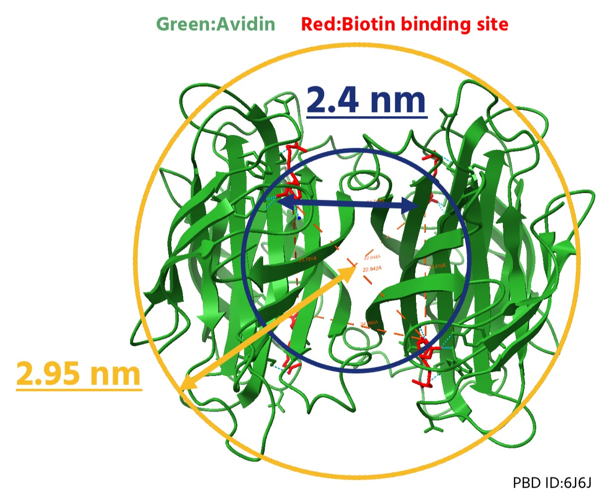
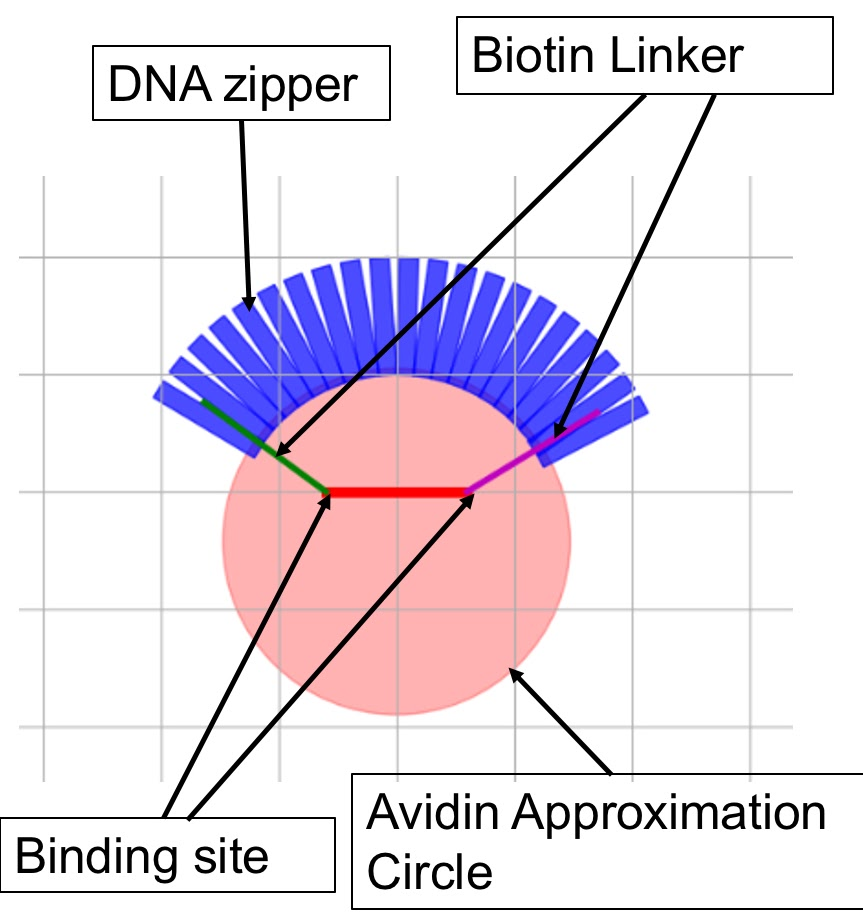
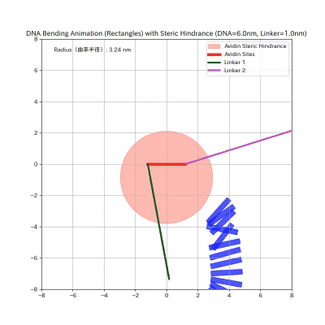
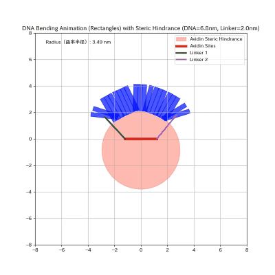
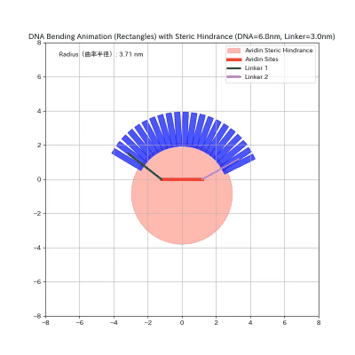
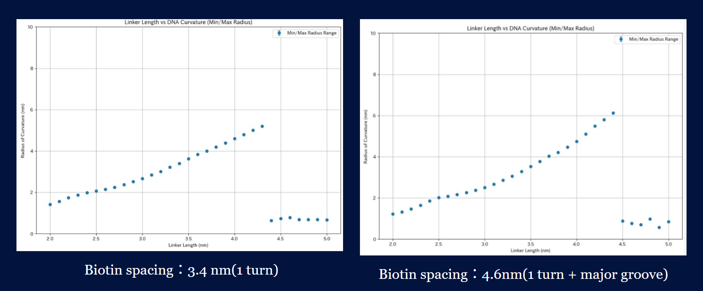
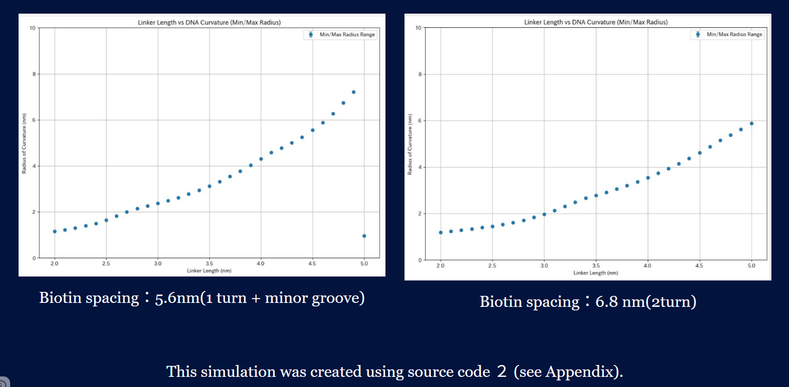
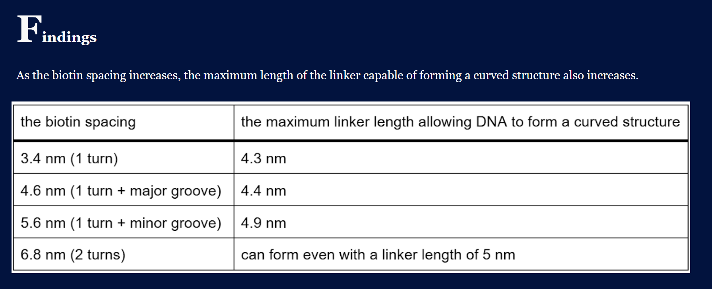

To achieve curvature control, we investigated how two variables—the length of the biotin linker and the distance between biotin molecules—affect curvature.
Settings
|  | Avidin has four binding sites, each with an edge length of approximately 2.4 nm. The four binding sites approximate a regular tetrahedral structure. Treating the center of the tetrahedron as the center of a sphere and approximating avidin as a rigid sphere yields a radius of approximately 2.95 nm. | |
 |
The length of the linker refers to the distance from the end of the biotin to the end of the spacer, as shown in the figure on the right. | |
|  | The following simulation represents the curved structure formed by biotin-modified DNA via the avidin-biotin interaction as a rigid body approximation model using Pymunk. The DNA zigzag approximates a structure composed of numerous connected cylindrical rigid body segments. Each cylinder has a radius of 1.0 nm and a thickness of 3.24 Å, corresponding to one base pair. Using Pymunk's collision handling, we set up physical repulsion between DNA segments and the avidin circle. |
１, Effect of Biotin Linker Length on Curvature
Using Pymunk's rigid body approximation model, we examined how the curvature of the bent structure differs when the biotin linker length is 1 nm, 2 nm, or 3 nm. To ensure sufficient curvature for comparison, the distance between biotin groups was fixed at 6.8 nm (2 turn). The curvature radius is measured at the point when the DNA's curved structure has finally stabilized. However, if the curved structure collapses, the value is taken immediately before the collapse occurs. Simulation images of other patterns are included in the appendix.|  |  |  |
| linker length：1.0nm | linker length：2.0nm | linker length：3.0 nm |
２, The correlation between linker length and radius of curvature
As the length of the linker increases, the binding force becomes less easily transmitted to the DNA, making it difficult to maintain the curved structure.
The correlation between linker length and radius of curvature is shown for each biotin-biotin distance within the linker length range of 0 nm to 5 nm.
Biotin spacer were determined to be 3.4 nm(1 turn), 4.6nm(1 turn + major groove), 5.6nm(1 turn + minor groove)
, 6.8 nm(2turn)
Vertical axis: curvature radius
Horizontal axis: Linker length
A sharp decrease in the radius of curvature indicates that a curved surface structure is not formed. Simulation images of other patterns are included in the appendix.
  ３, Effect of Biotin Spacing on Curvature
Using Pymunk's rigid body approximation model, we investigated how the curvature of the bent structure differs for biotin inter-distance values of 3.4 nm(1 turn), 6.8 nm(2turn), and 10.2 nm(3turn). The length of the biotin linker was fixed at 3.05 nm, the value actually used in the experiment. The curvature radius is measured at the point when the DNA's curved structure has finally stabilized. However, if the curved structure collapses, the value is taken immediately before the collapse occurs. Simulation images of other patterns are included in the appendix.